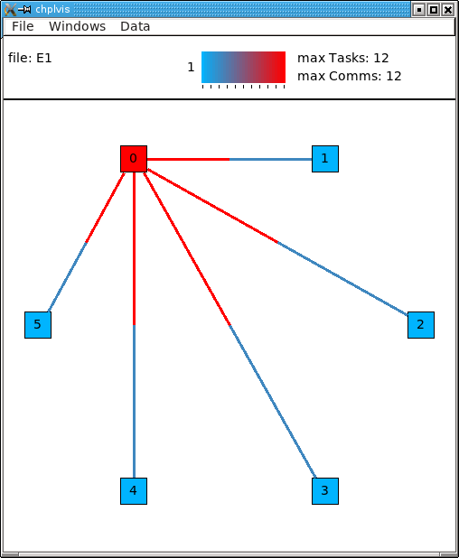
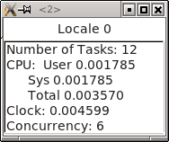
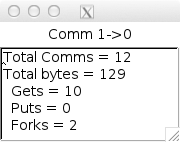
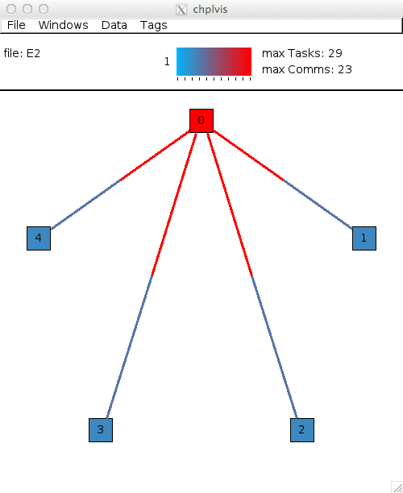
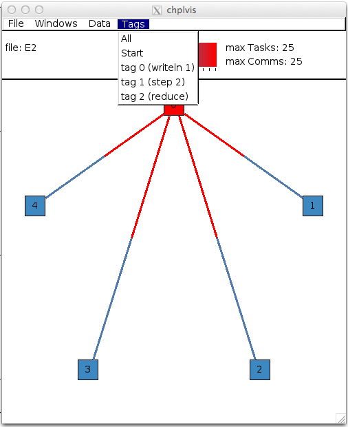
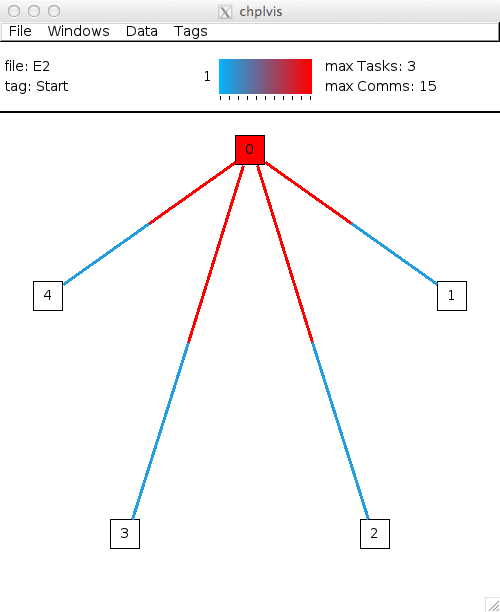

chplvis is a tool to help the Chapel program visualize their Chapel program's tasks and communication between locales. Using the standard module VisualDebug, the programer controls what part of their program generates information for chplvis. During the run of a program using the VisualDebug module, data files are created that are used as input for chplvis. This document will help you understand the VisualDebug module and the chplvis tool.
chplvis is built by giving the command "make chplvis" at the top level of the chapel tree. This also builds the GUI tool, FLTK, required to build and run chplvis. (Note: Some versions of Linux may require the standard package libx11-dev to be installed before FLTK will compile properly.) To get the most out of this primer, you should compile and run the example programs and examine the VisualDebug results with chplvis. The graphics in this primer were produced on a system using the fifo package instead of qthreads for the tasking layer. If you use qthreads, your task count may differ from the examples.
To use chplvis, the programmer adds code to their program. In many cases, the programmer may want to investigate only part of the program. This is accomplished by having functions startVdebug(name) and stopVdebug() to control where to start and stop the instrumentation of their program. Compilation and execution of these programs remain the same. When the startVdebug(name) is executed, a collection of files, one per locale, are created in a directory with the name given in startVdebug(name).
Consider the chapel program: (prog1.chpl)
// Example 1 using visual debug
use VisualDebug;
startVdebug("E1");
coforall loc in Locales do
on loc do writeln("Hello from locale " + here.id + ".");
stopVdebug();
Compiling the program and running it with the options "-nl 6" will then produce a directory called E1 containing 6 data files, one for each of the locales and named E1-n where n is replaced with the locale number, a number from 0 to 5. Once this directory is created, one can run chplvis as chplvis E1 or simply chplvis and then opening the file E1/E1-0 from the file/open menu. The resulting diplay is:
(Note: This image is from an X11 display. On OS-X, the menu bar will be on the normal menu bar at the top of the screen and will not show in the main window.)
Clicking on elements of the display will bring up more information. Clicking on a locale will open a window for that locale showing information for that locale. For example, in example 1, clicking on locale 0 will produce a window that looks like:
(Note: There is overhead generated in tasks, CPU time and clock time for the Visual Debug function calls. chplvis removes from the task count the overhead tasks but it can not remove the CPU and clock time overhead.)
Clicking on the red part of the line between locale 0 and locale 1 will procduce a window that looks like:
It is important to notice the direction of the "arrow" in the header for the windows. This is for communication from locale 1 to locale 0. The total communication was 12. It is further broken out into three components:
// Example 2 of use of VisualDebug module and chplvis tool.
use BlockDist;
use VisualDebug;
config var ncells = 10;
proc main() {
// Create a couple of domains and a block mapped data array.
const Domain = { 1 .. ncells };
const mapDomain = Domain dmapped Block(Domain);
var data : [mapDomain] int = 1;
// Start VisualDebug here
startVdebug ("E2");
// First computation step ... a simple forall
forall i in Domain do data[i] += here.id + 1;
// Write the result, we want to see the results of the above
// so we tag before we continue.
tagVdebug("writeln 1");
writeln("data= ", data);
// Second computation step ... using the distributed domain
tagVdebug("step 2");
forall i in mapDomain do data[i] += here.id+1;
// Don't capture for the writeln
pauseVdebug();
writeln("data2= ", data);
// Reduction step
tagVdebug("reduce");
var i = + reduce data;
// done with visual debug
stopVdebug();
writeln ("sum is " + i + ".");
}
Note that the startVdebug("E2"); is places after the declarations so that tasks and communication for the declarations are not included. The initial display of chplvis shows data for the entire run.
There is now a new menu called Tags that refelcts the tagVdebug() calls in the program. Selecting the tags menu gives the following display:
Notice that the tag names are in parentheses. If a tagVdebug() call is executed more than once, each execution will end up with a different tag. It is possible that this menu could be very long and require scrolling to see all menu options. There are two special tags in this menu, All and Start. All shows the initial display for the entire run and Start shows the tasks and communitation only between the startVdebug("E2"); call and the first call to tagVdebug(), in this case, tagVdebug("writeln 1").
Selecting the tag menu option Start displays data for all code between startVdebug("E2") and tagVdebug("writeln 1"). chplvis shows the following:
You should be able to immediately see that